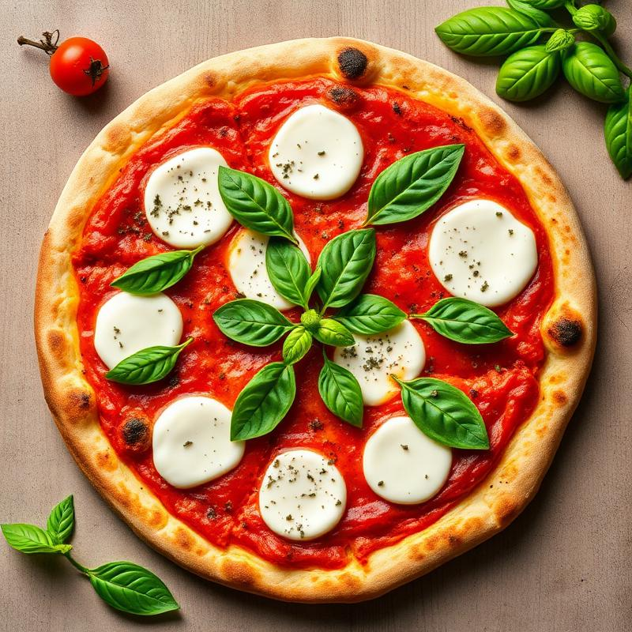

Margherita Pizza
Classic Italian pizza with fresh mozzarella, basil, and tomato sauce
25 mins 2 servings Medium
Ingredients
- Pizza dough (store-bought or homemade)
- 1 cup tomato sauce
- 200g fresh mozzarella, sliced
- Fresh basil leaves
- 2 tbsp olive oil
- Salt to taste
- Oregano
Instructions
- Preheat oven to 250°C (480°F) with a pizza stone if available
- Roll out pizza dough on a floured surface to desired thickness
- Spread tomato sauce evenly over the dough, leaving a border for the crust
- Arrange mozzarella slices over the sauce
- Drizzle with olive oil and sprinkle with oregano
- Bake for 12-15 minutes until crust is golden and cheese is bubbly
- Remove from oven and top with fresh basil leaves
- Let cool for 2 minutes before slicing and serving